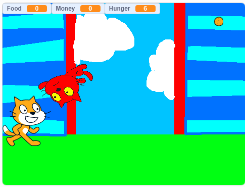

Course: Computer Science Principles
Duration: September 23 - October 9.
Objective: To create a game and modify it while exploring MIT App Inventor and blocky code.
Type of Project: Group (2 people)

Course: Computer Science Principles
Objective: To create a game using Scratch.
Type of Project: Group (2 people)
Project Information: For our project, we had to follow a tutorial on MIT App Inventor to create a game called,”Oh My Spikes”. After completing the tutorial, we then had to modify the game by adding cool features, such as a harder difficulty.
Important Skills and Growth: As a partner, my role was to help code the game, document our project, and give feedback to other groups.The most important thing I learned from this project was that communication leads to success. My partner and I communicated very well, and therefore, we were very efficient. We were able to export files and send them to each other, so we were able to do more of our project on the weekend. We also learned that creativity is an important aspect of computer science. My partner and I weren't creative enough, and we ended up losing points for not adding more features into our game. On my current HTML project, I am willing to take some creative risks, and put new features into my website.
Teamwork, leadership, and skills related to area of interest: For my partner and I, we both exemplified leadership, and good teamwork. Throughout the course of the project, we were always keeping each other on task, and communicating what to do next in our project. These illuminations of leadership and teamwork are what will make us better in the computer science industry, and for me, the sound industry. In both of these working environments, you have to talk and communicate with others, so being able to have these skills will make you succesful. Another skill that I learned from this project that can help to become a sound engineer is resilience. Being able to bounce back from a problem and be able to fix it is an important aspect of this field. If the music you are making isn’t what you want or expect, resilience is a key factor in having you keep trying until you suceed.
Technical and Professional Writing: For our project, we documented all of our work in a google document. You can see this document here. In our documentation for this project, we first brainstormed our ideas, and then put them into tiers based on how much we could get done based on the time we had. Then we got some feedback, first from another group in our class, and then from everyone in the class. With all the feedback we got, we decided to incorporate a changing background, and clearer instructions for how to play our game. Without this document, it would have been hard to improve our project in the ways that we did, and we wouldn't have gotten enough feedback and input for what we could change.
Scratch
Project Information: For this project, we had to make a game on scratch using the tools that we learned. Our game had to meet specific requirements, as it needed to have a specific goal to reach.
Important Skills and Growth: During this project, I didn't know that much about Scratch yet. During this project, I experienced knew ways to code with my partner, and we were able to create a moving villian and a way to gain points. This was one of the first steps of growth for me as a coder, as I was able to now code simple actions and implement them in game. Also, throughout coding, we realized we didn't quite meet all of the requirements for the project, and we were unable to change it before we had to turn it in. From this moment on, I realized that my partner and I needed to check all the requirements first before we make something that is really cool, but doesn't meet the requirements.
Teamwork, leadership, and skills related to area of interest: During this project, I'd say that my partner and I worked okay together. We had many different ideas about what we wanted to do with the game, which ended up causing a little bit of conflict, but we were able to compromise on an idea, and ended up creating agame with a flying villian to attack our protagonist. Being able to compromise with other people, even if you don't fully agree with their idea is an essential part of working in a term, which is a skill you need if you want to work in the musical or computer science industry. Even though we didn't a good grade on our project, I feel like I have grown as a person, as I was able to effectively communicate with my partner to formulate a solution that we were both happy about.
Technical and Professional Writing: For this project, we documented all of our plans and work in a google document. You can see this document here. In our documentation, we had a daily log for the things my partner and I did everyday, feedback from another group on our project, brainstorming, flowcharts, and more feedback from the final gallery walk. From the first feedback from the first group, we decided to create a walking game where our character would need to eat food and gain points to defeat the evil villain. We began working on our game, and continued to get feedback. We got a lot of feedback, and incorporated some of it into our game, but we didn't have time to code everything. Feedback from other groups really opened our eyes on the possiblities we could do in this game.